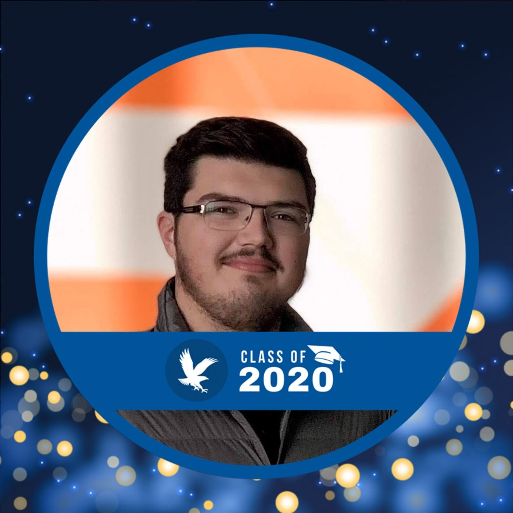

Kevin C. Ratzel
Seeking a position in product or project management
Education
Embry-Riddle Aeronautical University Class of 2020
Bachelor's of Science in Business Administration (Management)
Experience
Podcast Administrator & Radio Disc Jockey
The WIKD 102.5 FM
Fall 2015 - Spring 2020
- Founded the podcasting division of The WIKD 102.5 FM
- Facilitated new podcasting opportunities through partnerships with
Embry-Riddle and the surrounding community
- Conducted technical training for new podcasting team members
- Represented the station and lead roundtable sessions at national collegiate
broadcasting conferences on how to run a successful podcasting program
Shuttle Service Manager & Driver
Embry-Riddle Aeronautical University
Spring 2019 - Fall 2019
- Coordinate & Schedule personnel to ensure consistent coverage across all
shifts
- Oversee expansion to 3x previous operation
- Collaborate with upper-level administration on strategic initiatives
- Communicate with vendors during the acquisition and maintenance of
equipment